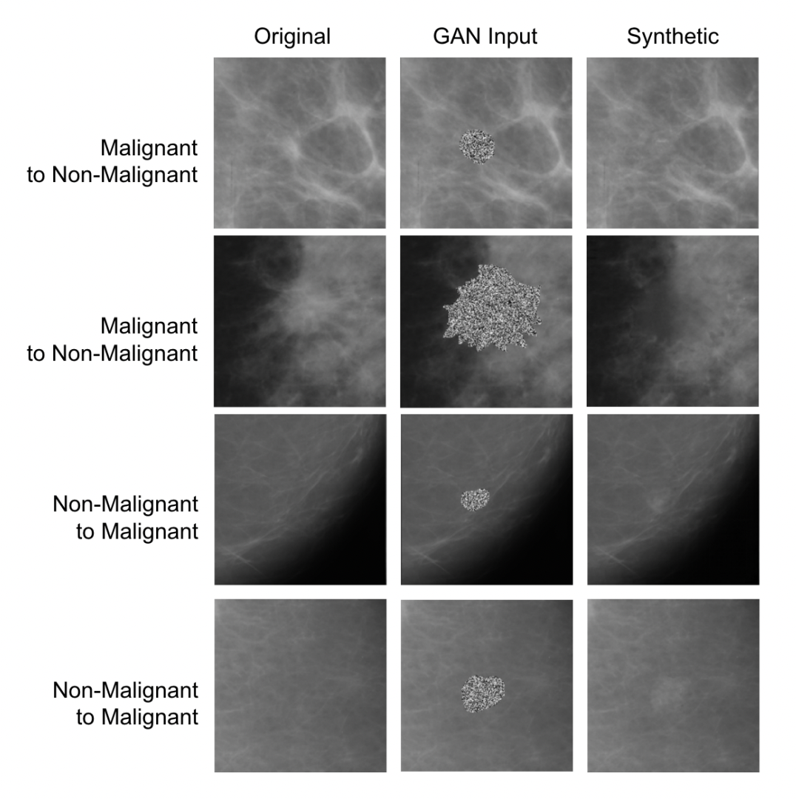
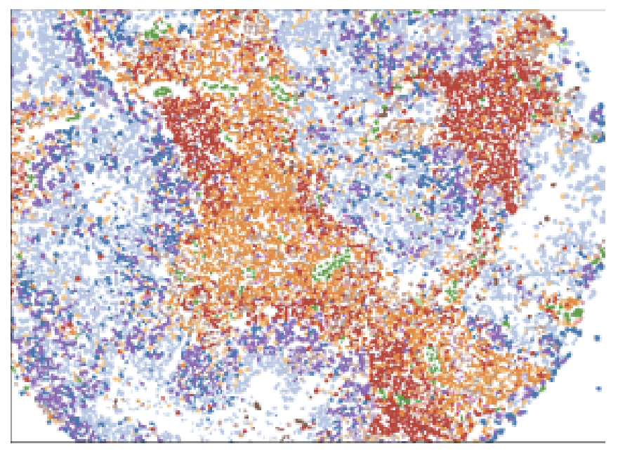

|
Hello! I am a PhD candidate in Electrical Engineering at Stanford University. I have the privilege to work with Professor James Zou in the Biomedical Data Science department and Professor Daniel E. Ho in the Law School. I am funded by the Stanford Bio-X SIGF Fellowship. Previously, I helped develop AI for cancer detection at DeepHealth in Cambridge, MA and worked in product management at Google. I was also at Harvard University for a Master's degree in computational science and at Duke University for my undergraduate studies. |
{kind=link}
|
I broadly research at the intersection of health and artificial intelligence. I'm interested in answering questions relating to AI regulation in medicine, machine learning for cancer diagnostics, and computational pathology.
|

|
Eric Wu, Kevin Wu, Roxana Daneshjou, David Ouyang, Daniel E. Ho, James Zou Nature Medicine, 2021 A comprehensive overview of medical AI devices approved by the US Food and Drug Administration sheds new light on limitations of the evaluation process that can mask vulnerabilities of devices when they are deployed on patients. |
|  |
Eric Wu, Kevin Wu, David Cox, William Lotter MICCAI, Breast Image Analysis Workshop, 2018 We use generative adversarial networks (GANs) to synthesize mammogram image patches for producing synthetic training data toward breast cancer detection. |
|  |
Eric Wu, Alexandro E. Trevino, Zhenqin Wu, Kyle Swanson, [...], Aaron T. Mayer, James Zou Under Submission, 2022 7-UP is a machine learning framework that can computationally generate in silico 40-plex CODEX at single-cell resolution from a standard 7-plex mIF panel by leveraging cellular morphology. |
|
|
|
Eric Wu, Kevin Wu Teaching a four-week course on the fundamentals of deep learning! We've partnered with our friends at CoRise, an online teaching platform. |
|
Template adapted from this repo. |